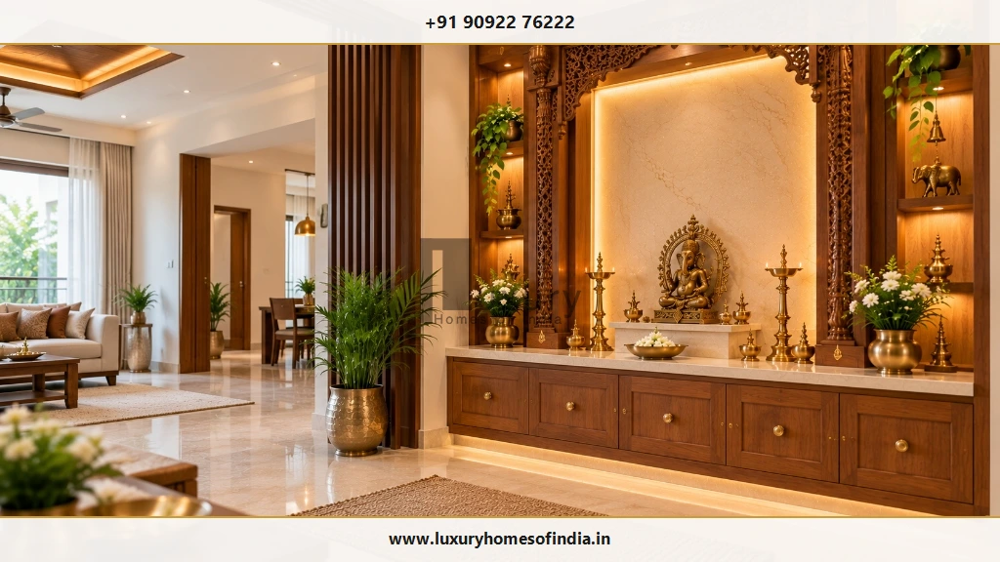
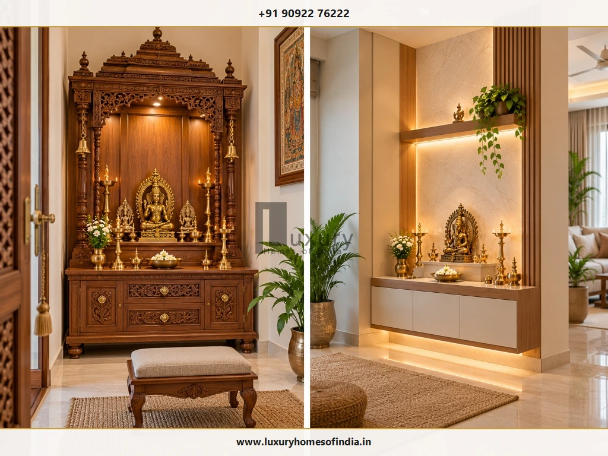
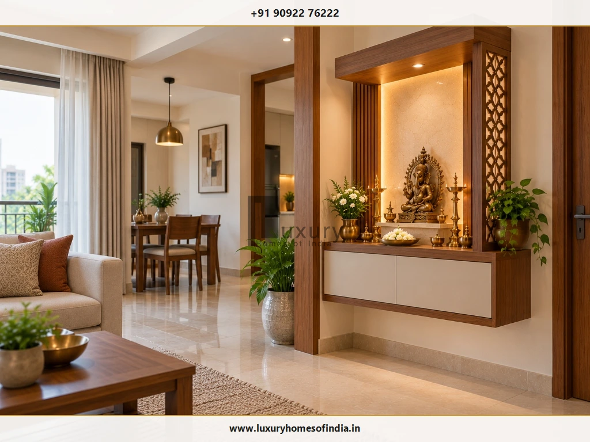
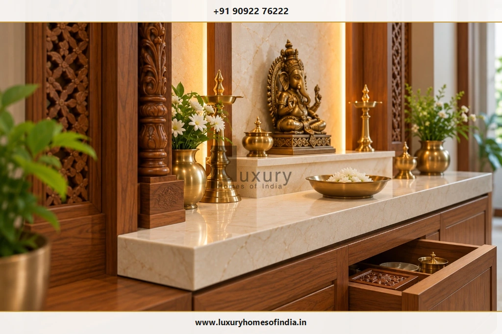
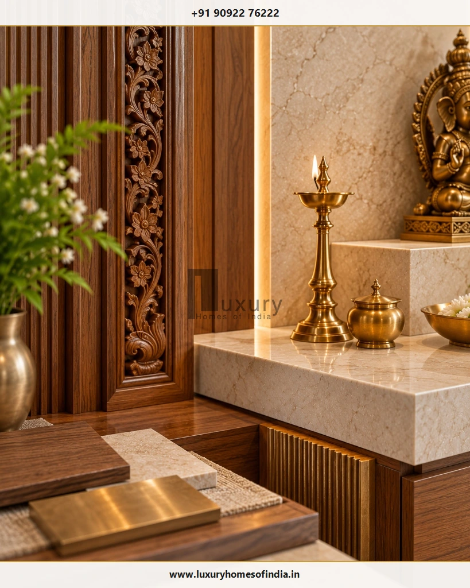

A traditional mandir design for home interiors often features carved wood, temple-inspired arches, brass accents and natural stone. A contemporary mandir design typically uses clean lines, simple altar platforms, integrated lighting and concealed storage. The right choice depends on your available space, family traditions, preferred materials, maintenance requirements and the architecture of your home. For many Indian homes, a combination of both styles offers a balanced solution: traditional craftsmanship provides character, while contemporary planning keeps the prayer area organised and practical. Before selecting a design, consider the location, dimensions, storage, ventilation, lighting and safe placement of diyas. Whether you are planning a compact apartment mandir, a dedicated pooja room or a bespoke villa interior, the goal is to create a meaningful worship space that complements the rest of your home without compromising everyday usability.

1. Understanding Traditional and Contemporary Mandir Design
A home mandir is shaped by personal faith, family customs and interior design preferences. Traditional and contemporary approaches offer different ways to express those preferences, and neither is universally better. Understanding how each approach addresses spatial organization, detailing, and daily maintenance helps homeowners choose an altar configuration that feels spiritually uplifting and architecturally cohesive.
Traditional mandir design
Traditional home temples draw inspiration directly from classical temple architecture, featuring symbolic carvings, sanctified proportioning, and time-honoured materials like solid teakwood, rosewood, and polished stone.
Common Traditional Characteristics
- Carved wooden frames and decorative pillars: Fluted or floral turned columns inspired by Dravidian, Nagara, or Chettinad timber heritage.
- Temple-inspired arches and ornamental profiles: Classical gopuram or stepped shikhara crown mouldings and scalloped arched openings.
- Raised altar platforms and traditional motifs: Multi-tiered steps for idols (peetham), kalash finials, and auspicious lotus or peacock carvings.
- Brass lamps, bells and selected metal details: Cast hanging temple bells (ghanti), deep-bellied oil diyas, and authentic brass hardware.
- Natural wood, marble or other stone finishes: Solid hardwoods, Makrana white marble, or Thanjavur polished granite altars.
- Decorative shutters or patterned panels: Ornate bi-fold louvered wooden doors or open fretwork panels providing ritual enclosure.
Traditional mandirs can range from a compact wooden unit to a more elaborate structure within a dedicated prayer room. They may suit homes with classic furniture, heritage-inspired interiors or a preference for detailed craftsmanship. The amount of ornamentation should reflect the available space rather than the size of the house alone, ensuring the prayer corner feels peaceful rather than visually congested.
Contemporary mandir design
Contemporary mandirs focus on visual calmness, geometric clarity, and seamless integration with modern interior millwork. By stripping away intricate mouldings and heavy cornices, this approach prioritises light, materials, and uncluttered negative space.
Common Contemporary Characteristics
- Clean geometric lines and simple proportions: Floating horizontal altar ledges, crisp 90-degree mitred corners, and flush wall panelling.
- Wall-mounted or built-in altar units: Cantilevered units that leave the floor open, enhancing room circulation and ease of cleaning.
- Neutral finishes and coordinated materials: Off-white quartz, fluted oak, soft beige lacquered glass, or matte stone-textured surfaces.
- Concealed storage for prayer accessories: Push-to-open lower drawers and hidden compartments that keep oil cans, matches, and prayer books out of sight.
- Integrated lighting and restrained decorative details: Concealed 3000K warm LED profile lighting illuminating deity silhouettes without harsh glare.
- Glass or jaali partitions where appropriate: Slim laser-cut metal or fluted acoustic glass screens defining sacred boundaries without dividing natural light.
Contemporary designs can be useful in apartments, open-plan living areas and homes where a prayer space needs to coordinate with existing cabinetry. A contemporary mandir should still feel distinct from ordinary storage. A considered backdrop, a well-proportioned altar or a traditional brass accessory can give it a more personal identity, ensuring it never feels clinical or sterile.
2. Traditional vs Contemporary Mandir Design
Choosing between traditional and contemporary mandirs requires evaluating appearance alongside practical everyday maintenance, available footprint, and surrounding decor. The table below outlines key structural and aesthetic distinctions:
| Design Consideration | Traditional Mandir Design | Contemporary Mandir Design |
|---|---|---|
| Appearance | Ornamental, reverent, and heritage-inspired | Clean, streamlined, and architectural |
| Typical Detailing | Intricate hand carvings, scalloped arches, turned pillars, and temple motifs | Geometric frames, clean shadow lines, and minimal profiles |
| Materials | Solid teakwood, rosewood, natural marble, granite, and cast brass | Veneers, quartz slabs, engineered stone, fluted panels, and tempered glass |
| Storage | Exposed decorative drawers, louvered cupboards, and brass-fitted cabinets | Concealed push-to-open drawers, handle-less cabinets, and soft-close pull-outs |
| Lighting | Traditional oil lamps (diyas) supplemented by ambient chandeliers or brass pendants | Integrated warm LED cove strips, hidden spotlights, and backlit onyx/marble backdrops |
| Space Planning | Freestanding shrines, mandaps, or dedicated full-scale pooja rooms | Wall-mounted floating units, recessed wall niches, and corner partitions |
| Maintenance | Intricate carvings require detailed dusting and periodic polishing | Smooth flat surfaces allow rapid, effortless daily cleaning |
| Interior Compatibility | Classic, Chettinad, colonial, and heritage-inspired residences | Modern apartments, minimalist villas, and open-plan urban homes |
These are general design tendencies rather than fixed rules. A traditional wooden mandir can have restrained detailing, while a contemporary design can incorporate a carved frame or brass accents to bridge both worlds naturally.

3. Traditional Mandir Design Ideas for Indian Homes
If your family treasures classical sacred detailing, several traditional configurations can be executed to honour devotional customs while harmonising with residential architecture:
Carved wooden mandir
A carved wooden mandir can bring warmth and craftsmanship to a home. Depending on the design, it may include an arched frame, decorative panels, a raised altar and drawers for accessories. Keep the carving proportionate to the surrounding room. Consider how the wood finish will coordinate with doors, flooring and nearby furniture, and confirm the material specification and maintenance requirements before fabrication. Solid seasoned teakwood or sustainably sourced Indian rosewood remains the premier selection for longevity and resistance to humidity variations.
Temple-inspired mandap
A mandap-style design uses a defined altar, an upper frame and, in some versions, decorative pillars. This approach may suit a dedicated pooja room or a larger prayer area in an independent house or villa. Plan the footprint, access for cleaning and any structural support required for heavy components before approving the design. Ensuring adequate walking clearance around the mandap enables comfortable circumambulation (pradakshina) during auspicious occasions.
Marble mandir with traditional detailing
Marble or another suitable natural stone can provide a formal altar surface. Traditional borders, a carved frame or carefully selected brass accents can complement the stone. Stone selection should account for weight, staining, cleaning and installation. High-density white Makrana marble or crystalline composite quartz resists oil spills effectively, but a qualified professional should assess the supporting structure and fixing method where stone cladding extends to ceiling height.
South Indian heritage-inspired mandir
For homes drawing on South Indian design traditions, warm wood, brass accessories, natural stone and restrained traditional motifs can create a cohesive look. In a contemporary Chennai home, these elements can be simplified to coordinate with modern flooring, wall finishes and cabinetry—as seen in classic Chettinad-style pooja rooms with carved pillars, Athangudi floor tiles, and solid brass hanging diyas. Regional inspiration should guide material and detailing choices without requiring every traditional element to be used together.
Mandir with decorative doors
Decorative shutters or carved panels can define a dedicated prayer space and provide a visual transition between the mandir and the surrounding room. Laser-cut brass jaali insets or carved lattice woodwork allow incense aroma and light to filter through gently even when doors remain closed. Always check the door swing, handle clearance and ventilation. The doors should not obstruct the altar or make daily access inconvenient during morning prayer routines.
4. Contemporary Mandir Design Ideas
For urban residences, open-plan layouts, and modern apartments, contemporary mandir design delivers a peaceful sanctuary while respecting clean architectural lines:
Minimalist wall-mounted mandir
A wall-mounted mandir can preserve floor space in an apartment or compact prayer corner. A simple platform, a coordinated backdrop and limited storage can keep the design visually light. Before installation, confirm the wall construction, fixing system and load capacity. Heavy stone elements should not be mounted on drywall without appropriate internal plywood or steel backing studs.
Built-in mandir niche
An existing architectural wall niche can accommodate an altar shelf, a decorative back panel and carefully positioned lighting. Before creating a new recess, check the wall construction, structural implications and concealed services. The available depth should accommodate the intended altar (typically 18 to 22 inches) and allow comfortable access to all idols and ritual accessories.
Mandir with concealed storage
A built-in cabinet can help organise prayer accessories while keeping the main altar uncluttered. Plan storage around the family's actual routine. Frequently used items—such as daily matchboxes, camphor, wicks, and oil bottles—should reside in shallow upper drawers, while ceremonial vessels and festive items can be stored in deeper lower cupboards. Doors or drawers should operate smoothly without interfering with the worshipper's seating mat.
Glass or jaali partition
A glass or decorative jaali partition can distinguish a prayer corner from an adjoining living or dining space without completely closing it off. Consider privacy, cleaning, durability and ventilation. The partition must also be appropriate for the chosen lamp and incense practices, ensuring combustible glass film or untreated wooden frets remain well away from diya heat.
Stone backdrop with simple woodwork
A stone or stone-look backdrop paired with a clean-lined wooden altar creates a restrained combination of texture and warmth. Compare actual material samples where possible. Colour, surface finish and lighting can change how stone and wood appear in the completed room. Honed or leather-finish granite and fluted timber panels offer a tactile, glare-free aesthetic under indirect warm illumination.

5. Modern Traditional Mandir Design: Combining Both Styles
A hybrid mandir combines traditional detailing with contemporary planning. It is a useful option for homeowners who value heritage-inspired materials but prefer a less ornate interior that matches modern furniture. By blending handcrafted motifs with streamlined millwork, you preserve cultural legacy without visual heaviness.
High-Impact Hybrid Combinations
- Carved wood and a simple altar: Keep a decorative carved wooden arch or frame while placing it over a clean-lined, minimalist quartz platform with flush cabinetry.
- Stone and brass: Pair a restrained neutral stone platform (such as grey granite or Italian travertine) with a traditional hand-cast standing brass lamp or bells.
- Traditional arch and integrated lighting: Retain the classical sacred arch profile while replacing exposed bulbs with discreet 2700K LED edge illumination.
- Heritage motifs and neutral finishes: Use one traditional pattern (such as a subtle lotus mandala or floral jaali) against an ivory, beige, or natural blonde-wood backdrop.
- Traditional appearance with modern storage: Retain the visual character of an ornate wooden shrine while integrating heavy-duty soft-close drawer slides and pull-out diya extension trays.
The most effective combination usually has one dominant style. Let the secondary style support the main feature instead of competing with it. For example, if you choose an elaborate hand-carved teakwood sanctum, keep the surrounding walls, floor, and lighting quiet and minimal.

6. Choosing Materials for a Home Mandir
Material selection sets the tone for tactile elegance, durability, and daily maintenance. Because home shrines experience heat from lamps, incense smoke, and water or milk offerings during rituals, material resilience is paramount:
Wood
Wood can suit both traditional and contemporary mandirs. Carving and richer stains (such as dark walnut or honey teak) create a classical temple appearance, while straight-grained blonde oak, ash, or matte veneers suit contemporary interiors. Confirm the timber or engineered-wood specification, surface finish, moisture exposure and cleaning requirements. Solid hardwoods require kiln-seasoning to prevent warping under fluctuating humidity.
Marble and natural stone
Stone can be used for altar surfaces, decorative surrounds or backdrops. Selection should account for weight, staining behaviour, sealing requirements and maintenance. White Indian marble (such as Makrana) is culturally revered, but natural stone is porous and can stain from turmeric, kumkum, or mustard oil. Ensure natural stone surfaces receive a food-safe impregnating sealer during installation.
Laminates and finished panels
High-pressure laminates, acrylic panels, and PU-lacquered boards provide a broad range of colours, textures, and fluted designs for contemporary cabinetry. While cost-effective and scratch-resistant, laminates should never form the immediate surface underneath burning oil lamps or camphor trays due to heat sensitivity.
Brass and other metal accents
Brass lamps, bells, handles and decorative insets introduce sacred warmth into either style. Select a limited number of authentic metal accents to avoid a visually crowded composition. Solid cast brass develops a natural vintage patina over time; if you prefer a bright reflective finish, choose lacquered brass components.
Glass and decorative screens
Toughened glass and laser-cut metal or wood-polymer composite (WPC) jaali screens create delicate visual partitions without enclosing the sacred corner completely. Ensure panels are securely anchored, easily wiped clean of incense dust, and positioned safely away from open flames.

7. Mandir Lighting, Colours and Practical Comfort
Lighting should elevate devotional focus while keeping the altar practical and comfortable for daily worship. The illumination strategy should adapt to your chosen style:
- For traditional mandirs: Warm ambient lighting (2700K) enhances the natural warmth of timber carvings and polished brass. Traditional hanging oil lamps can remain central to the arrangement when placed safely over stone platforms.
- For contemporary mandirs: Integrated LED strips and concealed mini-spots illuminate the deity niche cleanly without visual clutter. Diffused backlit panels (such as onyx or alabaster) provide a soft, ethereal halo effect.
- For hybrid mandirs: Discreet modern cove lighting accentuates a traditional carved wooden arch or back panel, combining atmospheric drama with functional altar visibility.
Essential Diya & Electrical Safety Protocol
Always keep electrical fittings, LED drivers, and combustible wood or acrylic finishes well clear of open flames. Place diyas and camphor exclusively on heat-resistant stone or metal pull-out trays with minimum 12-inch vertical clearance. Ensure the mandir ceiling has soot-resistant finishes or dedicated cross-ventilation, and never leave oil lamps unattended.
Keep LED power supplies (drivers) installed in an accessible, ventilated lower service cabinet so they can be replaced easily without dismantling fixed altar woodwork.
Choosing a colour palette
The colour palette sets the psychological mood of the sacred sanctuary. Align your hues with the overarching interior style:
| Interior Style | Recommended Colour Palette |
|---|---|
| Traditional | Medium to dark wood tones (honey teak, walnut, mahogany), warm ivory, temple cream, rich terracotta accents, and polished brass highlights. |
| Contemporary | Pure white, soft muted taupe, warm stone grey, natural ash wood, champagne bronze, and restrained metallic accents. |
| Hybrid | Natural golden wood finishes, soft ivory backdrops, warm champagne brass, and subtle grey or beige natural stone slabs. |
These are starting points rather than fixed rules. Review material samples together under the room's actual light conditions. In a smaller apartment room, use dark finishes and strong patterns selectively to prevent the mandir from dominating or shrinking the available space.
8. Which Mandir Design Suits Your Home?
Always confirm the architectural spatial configuration before committing to a decorative style. The physical characteristics of your residence naturally suggest the most functional layout:
- Small apartment: Consider a wall-mounted floating unit, a compact multi-functional cabinet, or a fitted wall niche. Preserve floor circulation, comfortable standing clearance, and safe oil lamp placement. Review our guide to apartment pooja room designs for space-saving ideas.
- Independent house: A freestanding timber shrine or a dedicated prayer room with double doors may be possible, depending on layout and family worship customs. Explore pooja room ideas for independent houses for full room planning.
- Luxury villa: A bespoke mandir can be planned as an architectural centrepiece, coordinating altar proportions, carved woodwork, custom skylights, and stone flooring with the wider interior scheme. See our insights on luxury villa pooja rooms.
- Traditional South Indian interior: Favour warm timber, brass accessories, and regional temple motifs proportioned carefully to the room.
- Minimalist modern interior: Rely on clean backdrops, floating shelves, handle-less storage, and a single focal brass idol or diya.
A pre-design planning checklist
Before approving detailed fabrication drawings or custom millwork, review these seven critical parameters:
- Spatial boundaries: Measure the exact floor area, ceiling height, and required altar platform dimensions (review standard pooja room dimensions and clearances).
- Mounting type: Determine whether the unit will be wall-mounted, freestanding, built into a niche, or housed in a dedicated room.
- Material resilience: Verify timber species, stone sealing, heat tolerance, and routine cleaning needs.
- Storage capacity: Plan dedicated drawers for daily oil bottles, cotton wicks, incense boxes, matchsticks, and prayer texts.
- Services coordination: Map electrical switches, concealed LED channels, smoke ventilation, and flame safety zones.
- Family customs: Clarify household preferences regarding idol orientation, seated (padmasana) vs standing prayer, and festive gathering space.
- Structural backing: Ensure walls have solid masonry or reinforced plywood backing to carry heavy stone or hardwood elements.
9. Vastu Considerations for Mandir Design
Many Indian households value Vastu Shastra principles when establishing a home mandir. Preferences can vary across regional traditions, so clarify your family's expectations before finalising the layout.
The North-East (Ishanya) corner is traditionally regarded as the most auspicious quadrant for spiritual focus, bringing serenity and positive energy. When a North-East orientation is constrained by building architecture, the East or North quadrants serve as suitable alternatives. Idols are ideally oriented so devotees face East or North during prayer.
For deeper directional guidelines and common structural dos and don'ts, consult our detailed guide on pooja room placement as per Vastu. Practical architectural considerations must always accompany sacred guidelines: ensure unhindered door swing, adequate ventilation for incense smoke, comfortable walking access, and fire safety.
10. Common Mandir Design Mistakes to Avoid
Thoughtful planning prevents expensive post-installation alterations. Watch out for these eight common pitfalls:
- Too many competing styles: Combining intricate multi-motif carvings, bold jaali screens, and multiple metallic finishes can result in visual chaos rather than peaceful reverence.
- Disproportionate sizing: An oversized shrine overpowers a compact living room, while an undersized altar feels lost in a double-height villa foyer.
- Inadequate storage planning: Without dedicated lower drawers, daily ritual items quickly accumulate on the sacred altar surface.
- Unsuitable material choices: Placing heat-sensitive laminates directly under oil lamps or installing unsealed porous marble prone to stubborn oil and turmeric stains.
- Inaccessible lighting components: Burying LED drivers behind permanent fixed panelling, making driver replacement impossible without damaging carpentry.
- Unsafe diya clearances: Installing shelves or hanging decorative fabrics directly above open flame positions.
- Unverified wall load capacity: Mounting heavy solid stone or timber altars onto hollow partitions without structural framing reinforcement.
- Neglecting daily usability: Prioritising showroom glamour over comfortable knee clearance, easy cleaning reach, and adequate prayer mat space.
11. What Determines the Cost of a Mandir Design?
Mandir costs vary significantly based on scale, bespoke detailing, materials, and structural site preparation. A compact modular wall-unit and an architect-designed bespoke temple room are completely different scopes of work:
- Size and configuration: Wall-mounted compact units require less raw material than large freestanding mandaps or full-room sanctuaries.
- Raw material specifications: Solid first-grade Burma teak, Italian marble, or translucent onyx command a premium compared to commercial veneers and engineered stone.
- Craftsmanship intensity: Hand-carved floral pillars, multi-tier shikhara domes, and custom brass casting involve specialised artisan labour.
- Joinery and hardware: Soft-close concealed hinges, heavy-duty drawer slides, and custom pull-out brass trays add functional value and durability.
- Electrical and lighting integration: Concealed warm LED profiles, high-CRI accent spotlights, and hidden sub-distribution points.
- Site installation and structural work: Masonry modifications, wall reinforcement, stone polishing, and local civil coordination.
When reviewing quotations, insist that dimensions, exact material grades, surface finishes, hardware brands, electrical scopes, and installation inclusions be detailed comprehensively to prevent hidden variations during execution.
Frequently Asked Questions
Conclusion
Traditional and contemporary mandir designs offer different ways to create a meaningful worship space at home. Traditional designs emphasise craftsmanship and heritage-inspired details, while contemporary designs prioritise clean proportions, integrated storage and restrained finishes.
A hybrid design can bring these qualities together, but the right choice depends on the household's preferences, available space and practical requirements. Plan the altar, materials, storage, lighting and installation as one coordinated scheme rather than selecting decorative features in isolation.
For homeowners exploring residential architecture and bespoke interior planning, Luxury Homes of India shares inspiration for thoughtful, functional living spaces. Explore our comprehensive resources on mandir design for home, pooja room dimensions & layout, and luxury home temple design.